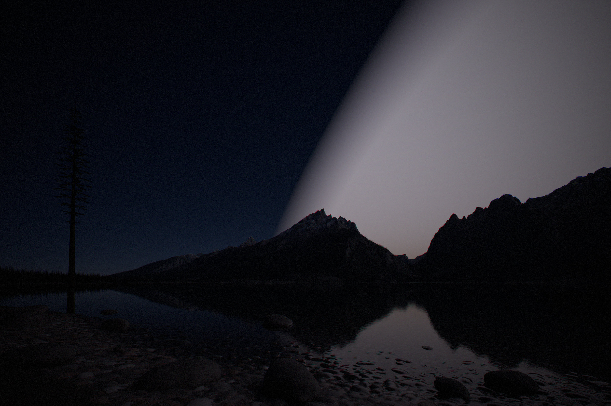
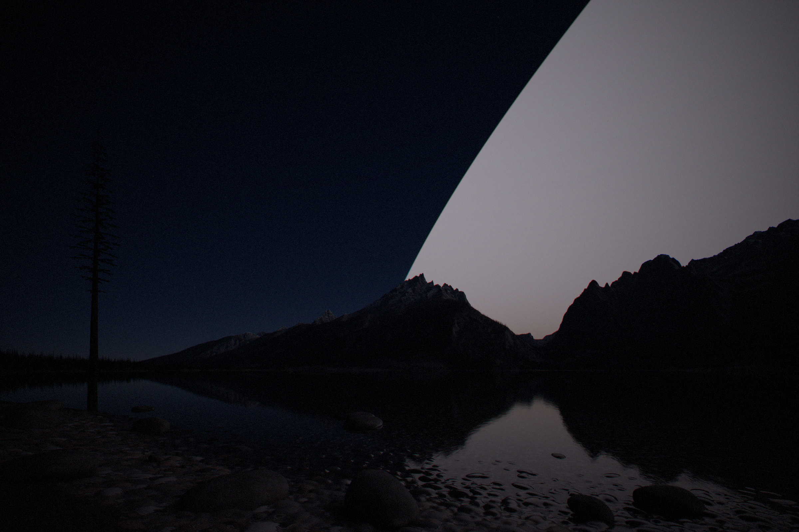

How the pictures were made
Nothing on the page is painted. Every picture is calculated from the model’s numbers, with each source of light at its real brightness, and then exposed the way a photographer would expose it.
In short
- Physics first, photography after. Each picture is first calculated in physical units of light. Exposure and colour are applied afterwards, like developing film, so making a picture brighter never changes what is in it.
- The sky is calculated, not drawn. Twilight comes from a model of how sunlight scatters in the air, checked against measurements. The night sky is the Milky Way, the faint glow of the upper air and 20,000 catalogued stars, each at its measured brightness. The swarm’s glow is added and scattered by the same air.
- Two kinds of renderer. Scenes with detailed shapes, the lake, the sails, the pod and Mercury, are rendered in Blender. Scenes made of spheres and sky, Earth from orbit and the sphere from far away, are calculated by our own code.
- Thermal images use fixed colour scales, so the same colour always means the same temperature.
From physics to photograph
Every scene is described in physical units. Sunlight at Earth’s distance is 1,361 watts per square metre; the Sun’s disc, the sails, the radiators on Mercury, city lights and the faint glow of the upper air all go in at their real brightness. The renderer then calculates how much light reaches each pixel of a camera, and writes it down in those same units.
Only then does photography begin. A real camera has to choose an exposure, because no photograph can show the full range of brightness in a scene with the Sun in it, and a real lens spreads a little light around very bright points. Those choices are applied afterwards, in three steps, so they can be changed without touching the physics.
render/glare.py, render/develop.py (exposure, daylight white balance at 5,772 K so sunlight looks neutral, and the AgX tone curve), render/post.py.Cameras are metered as a photographer would meter them: on a grey card in sunlight for daylight scenes, on the sky for night scenes. Where two pictures are meant to be compared, they share one exposure, and the caption says so. Where a picture has its own exposure, the caption says how much brighter or darker the scene really is.
The lake
The page’s recurring view is Jenny Lake in Grand Teton National Park, looking west across the water to the mountains on 22 August at 22:06, with the Sun 18.5° below the horizon: the moment twilight ends.
The ground is real. The terrain is the US Geological Survey’s elevation map at 8 m resolution; the lake bed is carved below the water surface, and a pebble beach is built in the foreground at 5 cm detail. Conifers are modelled down to the twigs and planted below the treeline, and snowfields lie on high north-facing slopes. Between the camera and the mountains, the air dims and scatters light along each line of sight, as haze does on a summer evening.
The sky
Blender’s own sky model lets sunlight scatter only once in the air. That makes twilight far too dark, six times too dark at the end of sunset and 160 times too dark an hour later, and turns deep twilight orange where the real sky is blue. So the sky is our own calculation, following a method published by Hillaire in 2020, in which light scatters many times and ozone absorbs a little red, which is why deep twilight is blue. Even so, an ideal clean-air model comes out two to four times too bright in deep twilight, so its brightness is matched to measurements of real twilight on clear nights.
The night sky behind it is built from measurements: the Milky Way from NASA’s calibrated star maps, the faint glow of the upper air, the glow of sunlit dust between the planets, 20,000 catalogued stars placed for the date and time, and the planets in their positions for that night.
The swarm in the sky
The swarm is added as layers that a line of sight crosses on its way out, each adding light or letting only part of it through.
render/sky_map.py.On 22 August Earth is a little more than 1 AU from the Sun, so the glowing region ends 69.9° from the Sun and the mirrors 75.6°. The glow’s colour is sunlight reflected by nearly neutral sails, with a faint violet tinge from their anti-reflection coating. The edge of the glow is sharp, softened over about a tenth of a degree, because the shell is thin.
The brightness changes enormously from stage to stage, far more than one photograph can show. So the stages are developed in three groups, each sharing an exposure.


From orbit
The views from low orbit are calculated by our own renderer, because the scene is just a sphere, its air and the sky, and following each line of sight directly is faster and more exact than Blender’s general method. The camera is 400 km above the Nile delta before dawn on 22 September 2128.
City lights come from NASA’s Black Marble satellite maps; how a map value turns into real brightness is uncertain by about three times. Clouds and land come from NASA’s Blue Marble pictures, and the sea reflects the sky like a rough mirror. The same model of the air is followed along each line of sight from orbit, and the upper air’s green and red glow is placed at its real heights, about 100 and 250 km. The Moon uses maps from the Lunar Reconnaissance Orbiter, lit by sunlight and by faint light from Earth; its few dozen pixels are calculated in fine detail, or a thin crescent would vanish.

From far away, and from inside
The views of the whole sphere are calculated from three times Earth’s distance, 25° above the plane of the planets. In visible light, the near side shows its unlit black backs, and through its gaps the far side shows its sunlit fronts. The Sun itself is covered by a small disc, as solar telescopes in space do, or its glare would hide everything. Through a thermal camera, the sails’ backs glow at their temperature for each stage, 382 K sparse, 402 K at half and 419 K closed, all on one fixed colour scale from 150 K to 450 K.
The view from inside the closed sphere is two flat layers and a sky: the camera is 800 m sunward of the innermost sails. The sky is the far side of the sphere, 280 million km away, where every sail faces the camera in full sunlight. It is as bright as an overcast day and the same in every direction, so there are no shadows.


render/sphere_space.py, render/closed_inside.py.The sail, the pod and Mercury
The sail is built from the design study’s dimensions. Its anti-reflection coating is modelled as a real thin film of porous glass, so its faint magenta-blue sheen comes out of the optics rather than a chosen colour. The slight curl of each fold panel beside its hinge is built in, so its glints survive at any distance. The film is so dark that it is exposed two stops brighter than a grey card would need, or it would print as plain black.
The counter-sun, the bright point beyond a sail’s tip, is the Sun mirrored back by every sail farther out along that line, calculated from how much they reflect and how much of the view they fill.
The pod is shown in sunlight and through a thermal camera, with each part at the temperature the design study gives it: radiator blades 345–355 K, solar wings 343 K, the blanketed module about 300 K.
Mercury uses the MESSENGER spacecraft’s maps of its brightness and height. The heat-limit picture paves it with radiators at 1,650 K, whose glow is calculated from that temperature. An earlier version used a short cut that overstated how bright such a surface looks, and placed radiators only on the night side, which could not shed the model’s heat; both were corrected.
Earth by design
The pictures of Europe and North America’s Pacific coast, today and with the dry summer belt moved north, are views from 4,000 km in July through the same model of the air as the views from orbit. The changed pictures keep every field, forest and city where it is. Only the summer’s colours change, matched to the colours of real regions today: in Europe, the new dry belt takes the colours of today’s Spain, southern Italy and Greece, and the old southern edge takes those of the steppe south of the Atlas mountains. On the Pacific coast, which already has dry summers up to Seattle, each strip takes the colours of the coast five degrees further south. They show one plausible outcome of the climate control described in Earth inside the swarm; no climate model has yet run it.
What the pictures leave out
- The bands. The shell’s formation bands would give it a faint texture of crossing stripes; it is drawn even.
- Single sails from Earth. Each is far too faint to see, and millions share every pixel, so the glow is smooth. That is correct, not a shortcut.
- Weather. The lake is shown on clear nights; the glow would also light clouds from above.
- Auroras, which end once the solar wind stops, are absent from every picture, as they would be.
Sources and code
- Project note:
docs/renders.md; scripts inrender/; stage renders byscripts/stage-renders.shandscripts/finish-renders.sh; diagrams innotes/figures.js. - Hillaire (2020), “A scalable and production ready sky and atmosphere rendering technique”, Eurographics Symposium on Rendering.
- Bond and Henderson (1963), illuminance during twilight; US Naval Observatory twilight data.
- Leinert et al. (1998), “The 1997 reference of diffuse night sky brightness”, Astronomy and Astrophysics Supplement 127.
- NASA Scientific Visualization Studio, Deep Star Maps; NASA Black Marble (2016); NASA Blue Marble (2004).
- USGS 3D Elevation Program; GEBCO relief.
- MESSENGER MDIS global mosaic and USGS Mercury elevation model; LRO WAC albedo.
- McEwen (1991), photometric functions, Icarus 92; Mallama and Hilton (2018), planetary magnitudes, Astronomy and Computing 25; Cox and Munk (1954), sea-surface slopes.
- Asset credits:
assets/CREDITS.md.